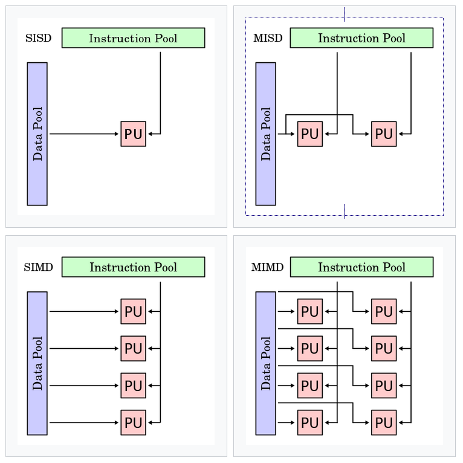

Vectorization
Vectorization is a topic that we will cover only very briefly, mostly to make you aware of its existence. Before we head into details, let's take a look at this picture

This picture summarizes what is known as 'Flynn's taxonomy', which is a classification of computer architectures in terms of data pools and instruction pools, based on the number of concurrent instruction streams and data streams. In the picture above, we see
- SISD: single instruction stream single data stream
- SIMD: single instruction stream, multiple data streams
- MISD: multiple instruction streams, single data stream
- MIMD: multiple instruction streams, multiple data streams (basically a distributed system)
MISD?
The MISD architecture might seem very strange, but is used in application where fault tolerance is extremely important, such as the flight control computer of the Space Shuttle program.
Vectorization relies on the properties of SIMD: single instruction stream, multiple data streams.
What is vectorization?
Vectorization is a special case of automatic parallelization, where a computer program is converted from a
- scalar implementation, which processes a single pair of operands at a time, to a
- vector implementation, which processes one operation on multiple pairs of operands at once.
Conventional computers typically have vector operations that simultaneously perform operations via SIMD or SPMD hardware. How does this work? Say we want to multiply two vectors of numeric data. A scalar approach would be something like:
for (i = 0; i < 1024; i++)
C[i] = A[i]*B[i];
The loop is executed 1024 times. Not only that, but for each iteration, and new and independent data pool and instruction pool are required.
This could be vectorized to look something like:
for (i = 0; i < 1024; i+=4)
C[i:i+3] = A[i:i+3]*B[i:i+3];
Here, C[i:i+3] represents the four array elements from C[i] to C[i+3] and the vector processor can perform four operations for a single vector instruction. The loop is only evaluated 256 times, and since the four vector operations complete in roughly the same time as one scalar instruction (for each iteration, one data pool and one instruction pool are required), the vector approach can run up to four times faster than the original code.
How is this helpful ?
Vectorization uses data level parallelism but not concurrency:
- there are simultaneous (parallel) computations, but
- only a single process (instruction) at a given moment.
SIMD is particularly applicable to common tasks such as adjusting the contrast in a digital image or adjusting the volume of digital audio. Most modern CPU designs include SIMD instructions to improve the performance of multimedia use.
Vectorization can be very useful, but for very specific problems, e.g. when
- The same value is being added to (or subtracted from) a large number of data points. This is an often used application of SIMD: for example when changing the brightness of an image where each pixel of an image consists of three values for the brightness of the red (R), green (G) and blue (B) portions of the color and a common value is added to (or subtracted from) them
Why not vectorize the world .. ?
Not all algorithms can be vectorized easily! Additionally, vectorization is labor-intensive: implementing an algorithm with SIMD instructions usually requires human intervention as most compilers do not generate SIMD instructions from a typical C/C++/etc program.
Automatic vectorization in compilers is an active area of computer science research, as e.g. modern graphics processing units (GPUs) are often wide SIMD implementations, capable of branches, loads, and stores on 128 or 256 bits at a time.
Vectorization support in ROOT
We would not talk about vectorization if it would not have a direct connection to ROOT. Also in physics, some problems might benefit from vectorization. Therefore, ROOT has introduced built-in vector types: Float_v and Double_v, which look like normal types (float and double), but the suffix _v tells us that they are vector types.
Vectorization support in ROOT comprises the following:
- Integration of VecCore in ROOT as the common vector abstraction in HEP
- Definition of new ROOT SIMD types: ROOT::Double_v, ROOT::Float_v.
- Adaptation of TF1 to evaluate functions evaluating over vector types.
- Adaptation of the fitting classes and interfaces in ROOT to accept the new
- SIMD types and functions implementing them.
- Parallelization of the fitting objective functions (Max. Likelihood, Least Squares)
TFormula supports vectorization. All the TF1 objected created with a formula expression can have a vectorized signature using ROOT::Double_v: TF1::EvalPar( ROOT::Double_v x, double p). The vectorization can then be used to speed-up fitting. It is not enabled by default, but it can be enabled by callig TF1::SetVectorized(true) or using the "VEC" option in the constructor of TF1, when ROOT has been built with VecCore and one vectorization library such as Vc.
//Higgs Fit: Implementation of the scalar function
double func(const double *data, const double *params) {
return params[0] * exp(-(*data + (-130.)) * (*data + (-130.)) / 2) +
params[1] * exp(-(params[2] * (*data * (0.01)) - params[3] *
((*data) * (0.01)) * ((*data) * (0.01))));
}
TF1 *f = new TF1(”fScalar”, func, 100, 200, 4);
f->SetParameters(1, 1000, 7.5, 1.5);
TH1D h1f(”h1f”, ”Test random numbers”, 12800, 100, 200);
h1f.FillRandom(”fvScalar”, 1000000);
h1f.Fit(f);
in the vectorized approach, we change the built-in types
//Higgs Fit: Implementation of the vectorized function
ROOT::Double_v func(const ROOT::Double_v *data, const double *params) {
return params[0] * exp(-(*data + (-130.)) * (*data + (-130.)) / 2) +
params[1] * exp(-(params[2] * (*data * (0.01)) - params[3] *
((*data) * (0.01)) * ((*data) * (0.01))));
}
//This code is totally backwards compatible
TF1 *f = new TF1(”fvCore”, func, 100, 200, 4);
f->SetParameters(1, 1000, 7.5, 1.5);
TH1D h1f(”h1f”, ”Test random numbers”, 12800, 100, 200);
h1f.FillRandom(”fvCore”, 1000000);
//Added multithreaded fit option
h1f.Fit(f, ”MULTITHREAD”);
As you see, the changes to user code are minimal. However, behind the scenes, the fitting operation exploits SIMD principles to speed up the execution of your code.
Support for vector types in C++
C++ supports vector types through e.g. Vc
#include <Vc/Vc>
using float_v = Vc::float_v;
...
for (; i < ksize - K; i += S) {
// interpret data as vector and do some operations
sum += float_v(&a[i]) * float_v(&b[i]);
}
see [https://github.com/VcDevel/Vc] for more information.
Exercises
This section in principle has no exercises, but you are encouraged to try run the above examples using both the scalar and vectorized implementation of the fitting routine, and see if there is indeed a speed benefit.